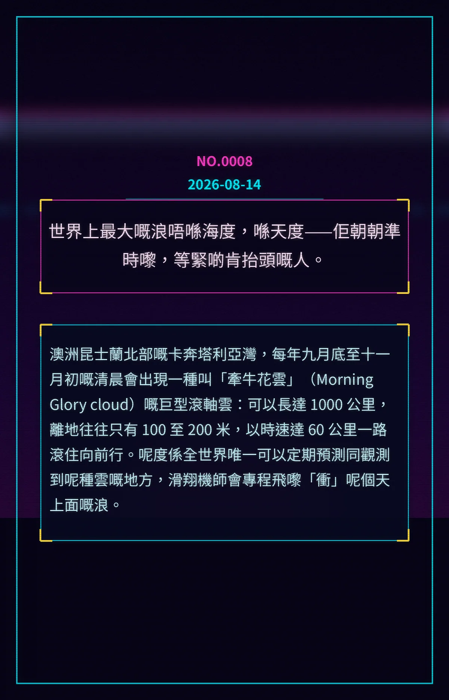

世界上最大嘅浪唔喺海度，喺天度——佢朝朝準時嚟，等緊啲肯抬頭嘅人。
澳洲昆士蘭北部嘅卡奔塔利亞灣，每年九月底至十一月初嘅清晨會出現一種叫「牽牛花雲」（Morning Glory cloud）嘅巨型滾軸雲：可以長達 1000 公里，離地往往只有 100 至 200 米，以時速達 60 公里一路滾住向前行。呢度係全世界唯一可以定期預測同觀測到呢種雲嘅地方，滑翔機師會專程飛嚟「衝」呢個天上面嘅浪。
e144ef669f27f1e8冷知识由执笔的模型自行查证。逐条断言、来源与所引原句存档在纯文字副本里，未经程序逐字校验，留作事后核实。